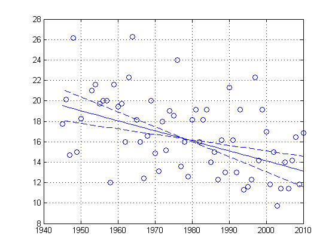

Contents
Mann-Kendall Tau (aka Tau-b) with Sen's Method (enhanced)
A non-parametric monotonic trend test computing Mann-Kendall Tau, Tau-b, and Sen’s Slope written in Mathworks-MATLAB implemented using matrix rotations.
Suggested citation:
Burkey, Jeff. May 2006. A non-parametric monotonic trend test computing Mann-Kendall Tau, Tau-b, and Sen’s Slope written in Mathworks-MATLAB implemented using matrix rotations. King County, Department of Natural Resources and Parks, Science and Technical Services section. Seattle, Washington. USA. http://www.mathworks.com/matlabcentral/fileexchange/authors/23983
%!!!!!!!!!!!!!!!!!!!!!!!!!!!!!!!!!!!!!!!!!!!!!!!!!!!!!!!!!!!!!! % % Important Note: % I have also posted a Seasonal Kendell function at Mathworks % sktt.m % %http://www.mathworks.com/matlabcentral/fileexchange/22389-seasonal-kendall %-test-with-slope-for-serial-dependent-data %!!!!!!!!!!!!!!!!!!!!!!!!!!!!!!!!!!!!!!!!!!!!!!!!!!!!!!!!!!!!!!!!! % % revised 12/1/2008- Computed variance now takes into account ties in the % time index with multiple observations per index. % Added in confidence intervals for Sens Slope % % Syntax: % [taub tau h sig Z S sigma sen n senplot CIlower CIupper D Dall C3] % = ktaub(datain, alpha, wantplot) % % where: % datain = (N x 2) double % alpha = (scalar) double % wantplot is a flag % ~= 0 means create plot, otherwise do not plot % % taub = Mann-Kendall coefficient adjusted for ties % tau = Mann-Kendall coefficient not adjusted for ties % n(n-1)/2 % h = hypothesis test (h=1 : is significant) % sig = p value (two tailed) % Z = Z score % sigma = standard deviation % sen = sen's slope % plotofslope = data used to plot data and sen's slope % cilower = lower confidence interval for sen's slope % ciupper = upper confidence interval for sen's slope % % These next two variables are output because they are needed in the % Seasonal Kendall function: sktt.m % D = denominator used for calculating Tau-b % Dall = denominator used for calculating Tau % C3 = individual seasonal slopes aggregated for Sens Seasonal Slope % nsigma = an assumed variance with all ties reconsidered but set to % equal number of positive and negative differences. % % % Modifications: % 12/1/2008 - Taub = denominator is adjusted % Tau = denominator is NOT adjusted % (matches USGS Kendall.exe output) % % 1/17/2009 - checks for anomalies and provides solutions and/or % notifications. In support of this for the Seasonal Kendall % (which was also updated 1/17/2009), another term was added to % the output of this function-- nsigma. % % 6/15/2011 - updated plotting confidence intervals on Sen's slope. I % don't recall my source on developing it, so use at your own % peril. That said using the 95/5 percentiles of the comptued % individual slopes seems to be reasonable-- I just don't have % a paper to back it up. % % 7/23/2011 - added a test for matlab version. % % When calculating trends, there are a few situations that create anomalies % in the estimates. Foremost, when S = 0, significance will always be % 100-percent, which is not possible. When this occurs the p-value is % adjusted by using the computed variance, but assuming S = 1. However, % the output from the function will still show S=0 when the case arises. % % Secondly, a statistically significant slope = 0 can occur when there are % a large number of ties in the data. In this case, a second test is done % assuming the number of ties is equal an even number positive and negative % differences. Significance is tested again, but the output is only sent % to the screen. The p-value returned in the function is still the % original p-value (and the adjusted p-value for serial correlation). % % Kendall Tau-b is useful when there are a significant number of % artificially induced tied values. For example, water quality data that % has infilled non-detects with half MDL's. This would create a false % number of ties simply because of the common technique of infilling an % unknown quantity with a known estimate of a quantity. % % These test for anomalies and solutions are based on an unpublished paper: % % Anomalies and remedies in non-parametric seasonal trend tests and % estimates by Graham McBride, National Institute of Water & Atmospheric % Research, Hamilton New Zealand. March 2000. % % % Note: if data are not temporally evenly spaced, Sen's slope becomes % inaccurate (a future TODO). % % Requirements: Statistics Toolbox % or comment out ztest and manually determine significance % % This function is coded without any loops. While this is extremely fast, % it does have some limitations to computer memory. For example, if a data % set is around 10,000 in length, 1.0 GB RAM may or may not work. % % However, I would imagine if memory is a problem for someone with large % datasets, a person could convert the necessary variables and statements % to work with sparse matrices. Which may slow down this function on % smaller datasets, but the memory issue would greatly diminish. % % Sen's methodology was added in by Curtis DeGasperi- King County, DNRP. % reference: Statistical Methods for Environmental Pollution Monitoring, % Richard O. Gilbert 1987, ISBN: 0-442-23050-8 % % A couple of resources for Mann-Kendall statistics. % % Statistical Methods in Water Resources % By D.R. Helsel and R.M. Hirsch % http://water.usgs.gov/pubs/twri/twri4a3/ % % Computer Program for the Kendall Family of Trend Tests % by Dennis R. Helsel, David K. Mueller, and James R. Slack % Scientific Investigations Report 2005-5275 % http://pubs.usgs.gov/sir/2005/5275/downloads/ % % % Written by Jeff Burkey % King County, Department of Natural Resources and Parks % 4/18/2006 % 12/4/2008 (significantly revised) % email: jeff.burkey@kingcounty.gov % % [taub tau h sig Z S sigma sen n senplot CIlower CIupper D Dall C3] = ktaub(datain, alpha, wantplot) function [taub tau h sig Z S sigma sen n senplot CIlower CIupper D Dall C3 nsigma] = ktaub(datain, alpha, wantplot)
try
Check MATLAB version for compatibility
Added this version trap since the most common comment I get is they syntax is in error. So far when people get this error it's because they are using an old version of matlab that does not accept some of the variable names in this function. 7/23/2011 - JJB
vmat = regexp(version,'\d+','match'); vr = [str2double(vmat{1}) str2double(vmat{2})]; if vr(1) == 7 if vr(2) >=9 || vr(1) > 7 % Then matlab version should work else txt = 'Your version of matlab is %s. \nYou need at least version 7.9 to run.\n Some of the syntax will not parse correctly.'; warning(txt,version) end end
catch msg error('Matlab version is way too old to run this function.'); end % wantplot is a flag to create a figure or not default set to no if exist('wantplot','var') == 0 % user didn't provide assume zero (i.e. no plot) wantplot = 0; end % Data are assumed to be in long columns, hence 'sortrows' sorted = sortrows(datain,1); % remove any NaNs, if data are missing they should not be included as % NaNs. sorted(any(isnan(sorted),2),:) = []; % return n after removing any NaNs n = size(sorted,1); % set to NaN if trend is not significant senplot = NaN; % extract out the data row1 = sorted(:,1)'; row2 = sorted(:,2)'; clear sorted; L1 = length(row1); L2 = L1 - 1; % find ties ro1 = sort(row1)'; ro2 = sort(row2)'; [~,b] = unique(ro1); [~,e] = unique(ro2); clear a c d f ro1 ro2; % correcting loss of first value using diff on with unique if b(1,1) > 1 ta = b(1,1); else ta = 1; end if e(1,1) > 1 tb = e(1,1); else tb = 1; end bdiff = [ta; diff(b)]; ediff = [tb; diff(e)]; clear ta tb b e;
Determine ties used for computing adjusted variance
tp = sum(bdiff .* (bdiff - 1) .* (2 .* bdiff + 5));
uq = sum(ediff .* (ediff - 1) .* (2 .* ediff + 5));
% modified 12/1/2008
% adjustments when time index has multiple observations
d1 = 9 * L1 * (L1-1) * (L1-2);
tu1 = sum(bdiff .* (bdiff - 1) .* (bdiff - 2)) * sum(ediff .* (ediff - 1) .* (ediff - 2)) / d1;
d2 = 2 * L1 * (L1-1);
tu2 = sum(bdiff .* (bdiff - 1)) * sum(ediff .* (ediff -1)) / d2;
% ties used for adjusting denominator in Tau
t1a = (sum(bdiff .* (bdiff - 1))) / 2;
t2a = (sum(ediff .* (ediff - 1))) / 2;
% create matricies to be used for substituting values as indicies
m1 = repmat((1:L2)',[1 L2]);
m2 = repmat((2:L1)',[1 L2])';
% populate matrixes for analysis
A1 = triu(row1(m1));
A2 = triu(row1(m2));
B1 = triu(row2(m1));
B2 = triu(row2(m2));
clear m1 m2 row1 row2;
% Perform pair comparison and convert to sign
A = sign(A1 - A2);
B = sign(B1 - B2);
Perform operations to calculate Sen's Slope
Median of rate of change among all data points- CLD added 5/3/2006
A3 = reshape((A1 - A2),L2*L2,1);
B3 = reshape((B1 - B2),L2*L2,1);
a = find(A3~=0);
C3 = sort(B3(a)./A3(a));
sen = median(C3);
clear A1 A2 B1 B2 A3 B3 a;
Evaluate concordant and discordant
+1 = concordant -1 = discordant 0 = tie
C = A.*B;
% Compute S
S = sum(sum(C,2));
clear A B C;
% Calculate denominator with ties removed Tau-b
D = sqrt(((.5*L1*(L1-1))-t1a)*((.5*L1*(L1-1))-t2a));
% Calcuation denominator no ties removed Tau
Dall = L1 * (L1 - 1) / 2;
% (modified 12/1/2008: added tau)
tau = S / Dall;
taub = S / D;
% adjust for normal approximations and continuity
if S > 0
s = S -1;
elseif S < 0
s = S + 1;
elseif S == 0
s = 0;
elseif isnan(S)
error('ErrorTrend:ktaub', 'This function cannot process NaNs. \nPlease remove data records with NaNs.\n');
end
Test for abnormalities in data
Certain conditions can occur that potentially invalidate this statistic. Conditional statements conduct some tests and provide the user some feedback.
if S==1 % Notify user continuity correction is setting S = 0 fprintf('\nTaub Message: When absolute value S=1,'); fprintf('\n Continuity correction is setting S = 0.'); fprintf('\n This will affect calculated significance.\n'); end % compute square-root of variance with all ties accounted for in time % index and in observation values. - JJB 12/1/2008 sigma = sqrt(((L1*(L1-1)*(2*L1 + 5) - tp - uq) / 18) + tu1 + tu2); % nsigma is used if slope is zero and determined significant. It is % hypothesized that all ties can be represented as an equal number of % postive and negative slopes. nsigma = sqrt(L1*(L1-1)*(2*L1+5)); Z = s / sigma; % Estimate confidence intervals of Sen's slope % The next line requires STATISTICS Toolbox (norminv) % Zup is a 2-tail Z (i.e. alpha/2) Zup = norminv(1-alpha/2,0,1); Calpha = Zup * sigma; Nprime = length(C3); M1 = (Nprime - Calpha)/2; M2 = (Nprime + Calpha)/2 + 1; % 2-tail limits CIlower = interp1q((1:Nprime),C3,M1); CIupper = interp1q((1:Nprime),C3,M2); % clear M1 M2 NPrime Zup Calpha % h = 1 : means significance % h = 0 : means not significant (i.e. sig < z(sig)) if s==0 % Not possible to be 100% certain, force S = 1 and compute p-value % using sigma. [h, sig] = ztest(1,0,sigma,alpha); fprintf('\nTaub Message: S = 0. P-value cannot = 100-percent. '); fprintf('\n P-value is adjusted using S = 1 and should be reported as p > %1.5f.\n',sig); if sen~=0 fprintf('\nTaub Message: A non-zero Sens slope occurred when S =0.'); fprintf('\n This is not an error, more a notification.'); fprintf('\n This anomaly may occur because the median may be computed'); fprintf('\n on one value equal to zero and one non-zero, etc.\n'); end else [h, sig] = ztest(s,0,sigma,alpha); end % Notify for Sens slope = 0 but is determined significant if h==1 && sen==0 [hh, nsig] = ztest(s,0,nsigma,alpha); fprintf('\nTaub Message: There was a significant trend = 0 found.\n'); fprintf(' Retested with ties set to equal number of positve and negative values.\n'); fprintf(' New p-value = %1.5f',nsig); if hh==1 fprintf('. However trend still found to be significant.\n'); else fprintf(', but trend is not found to be significant.\n'); end end
Plotting routine
Below is a very simplistic plotting routine to plot the Sen slope if the significance is less than 0.05. Uncomment or delete at your leisure.
if sig<=alpha && wantplot ~= 0 %A plotting example CLD added 5/3/2006 % Revised plotting 6/14/2011 - JJB % Plots the slopes using the median value as the focus point for % all three slopes (Sen's and confidence slopes). Is this the % correct method? Don't know but seems reasonable. - JJB 6/15/2011 hold on %generate points to represent median slope %zero time for the calculation is the first time point vv = median(datain(:,2)); middata = datain(round(length(datain)/2),1); slope = vv + sen*(datain(:,1)-middata); senplot = [datain(:,1) slope]; plot(datain(:,1),datain(:,2),'o') plot(datain(:,1),slope,'-') % add confidence intervals slope = vv + CIlower*(datain(:,1)-middata); plot(datain(:,1),slope,'--'); slope = vv + CIupper*(datain(:,1)-middata); plot(datain(:,1),slope,'--'); box on grid on hold off % pause end
end
ans = -0.3404